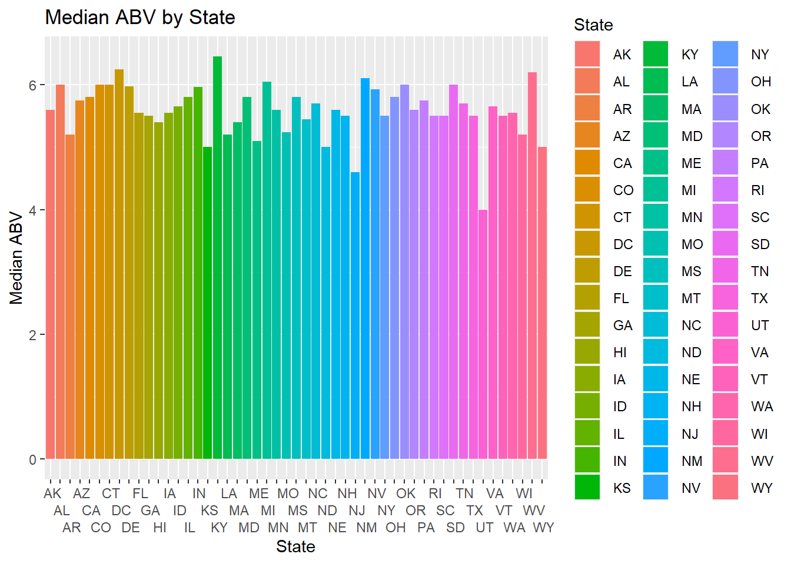
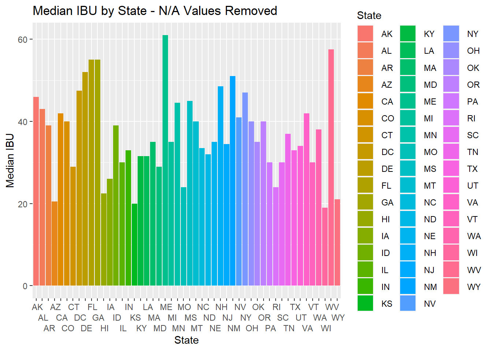
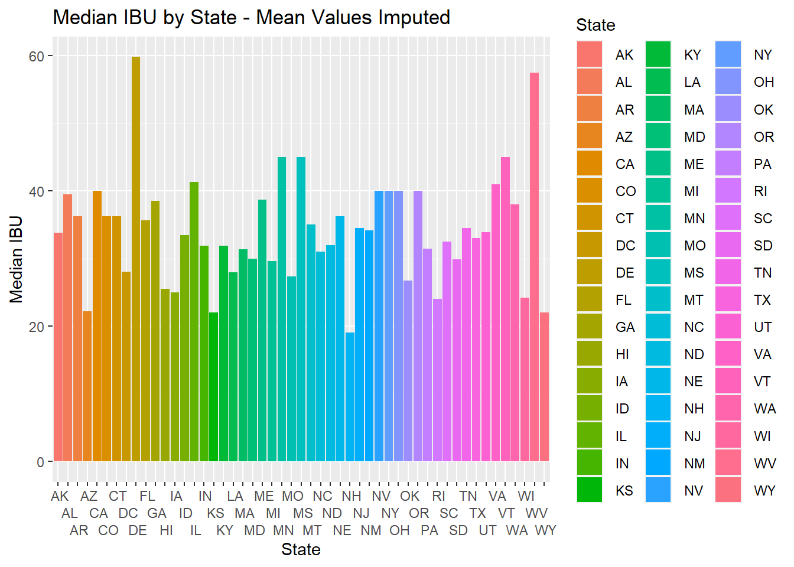
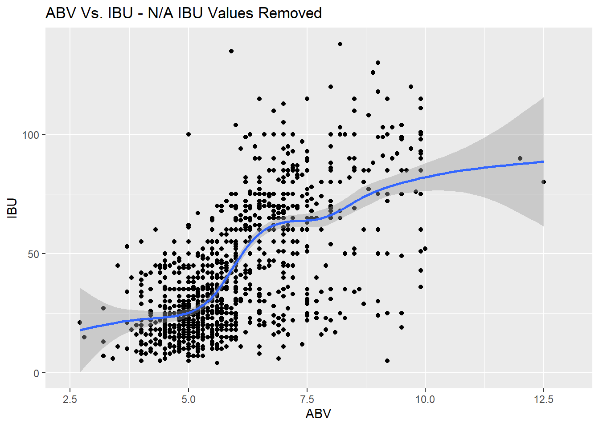
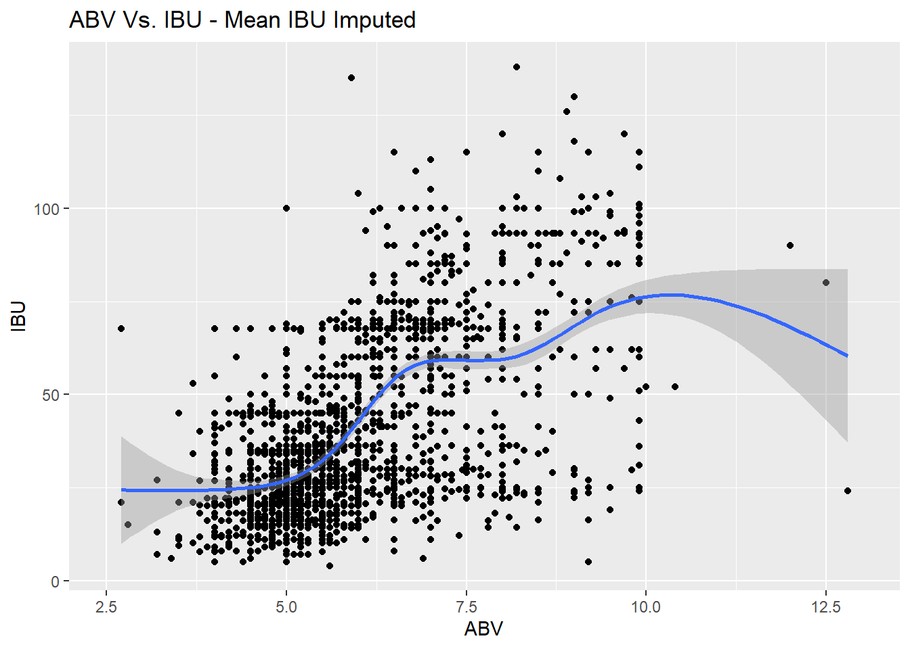

Budweiser Presentation
Steven Mann
7/3/2020
Video of this presentation available at
Introduction: Good afternoon Mr. Brito! Before I jump into my presentation, I want to thank you for the opportunity to work together. As a beer enthusiast, I was excited when you contacted my firm for services. I’ve prepared my report based on the data that you’ve provided, as well as the questions you were hoping to have answered. I understand you’re a busy man, so I’ll dive right in to what I’ve prepared for you.
library(ggplot2)
library(mapproj)## Loading required package: mapslibrary(dplyr)##
## Attaching package: 'dplyr'## The following objects are masked from 'package:stats':
##
## filter, lag## The following objects are masked from 'package:base':
##
## intersect, setdiff, setequal, unionlibrary(caret)## Loading required package: latticelibrary(tidyverse)## Warning: package 'tidyverse' was built under R version 4.0.2## -- Attaching packages ---------------------------------------------------------------------------- tidyverse 1.3.0 --## v tibble 3.0.1 v purrr 0.3.4
## v tidyr 1.0.3 v stringr 1.4.0
## v readr 1.3.1 v forcats 0.5.0## -- Conflicts ------------------------------------------------------------------------------- tidyverse_conflicts() --
## x dplyr::filter() masks stats::filter()
## x dplyr::lag() masks stats::lag()
## x purrr::lift() masks caret::lift()
## x purrr::map() masks maps::map()library(e1071)
library(class)Read in the Data
Beer = read.csv(file.choose(),header = TRUE) # Read in Beer File
Breweries = read.csv(file.choose(),header = TRUE) # Read in Brewery FileQuestion 1: How many breweries are in each state - To answer this question, we will present a Heat Map.
lookup = data.frame(abb = state.abb, State = state.name) #makes a data frame with State name and abbreviation.
BreweryHeatMap = Breweries #set up a new data frame for the heat map
BreweryHeatMap$State = trimws(BreweryHeatMap$State,which = c("left")) #Trim the extra " " character from before the State abbreviation
BreweryHeatMap2 = merge(BreweryHeatMap,lookup,by.x = "State",by.y = "abb",all.x = TRUE) #make one dataset with state names and abbreviations
BreweryData = count(BreweryHeatMap2,State.y) #count the occurrence of breweries in each state
colnames(BreweryData)[2] = "Breweries" #change "n" (the count of brewery occurrences) to "Breweries"
BreweryData$region <- tolower(BreweryData$State.y) #create column "region" from column "State"
BreweryData2 = BreweryData[-1] # subtract the first column ("State.y")
states <- map_data("state") #Load in longitude & latitude data for the United States
map.df <- merge(states,BreweryData2, by = "region",all.x = TRUE) #Merge the states and BreweryData data frames to plot the heat map
map.df <- map.df[order(map.df$order),] #make sure the data frame is in the proper order to plot the heat map
ggplot(map.df, aes(x=long,y=lat,group=group))+
geom_polygon(aes(fill=Breweries))+
geom_path()+
scale_fill_gradientn(colours = rev(heat.colors(10)),na.value = "grey 90") +
ggtitle("Breweries by State") +
coord_map() #This will plot the heat map ## We can see that Colorado clearly has the most breweries with over 40, following by California, Michigan, Texas and Oregon. It appears that West Virginia, ## North and South Dakota, Nevada, Arkansas, Mississippi, and New Hampshire may have the least.
## We can see that Colorado clearly has the most breweries with over 40, following by California, Michigan, Texas and Oregon. It appears that West Virginia, ## North and South Dakota, Nevada, Arkansas, Mississippi, and New Hampshire may have the least.
Question 2: Merge beer data with breweries data. Print the first 6 observations and the last 6 observations to check the merged file.
Beermerge = merge(Beer,Breweries,by.x = 'Brewery_id',by.y = 'Brew_ID') # Merge Datasets by the Brewery ID code
colnames(Beermerge)[2] = "Beer_Name" #Update column name to "Beer_Name"
colnames(Beermerge)[8] = "Brewery" #Update column name to "Brewery"
dim(Beermerge) #This will tell us how many rows there are in this dataset. There are 2,407## [1] 2410 10Beermerge[1:6,] #This will print the first 6 observations of the merged dataset## Brewery_id Beer_Name Beer_ID ABV IBU
## 1 1 Get Together 2692 0.045 50
## 2 1 Maggie's Leap 2691 0.049 26
## 3 1 Wall's End 2690 0.048 19
## 4 1 Pumpion 2689 0.060 38
## 5 1 Stronghold 2688 0.060 25
## 6 1 Parapet ESB 2687 0.056 47
## Style Ounces Brewery City
## 1 American IPA 16 NorthGate Brewing Minneapolis
## 2 Milk / Sweet Stout 16 NorthGate Brewing Minneapolis
## 3 English Brown Ale 16 NorthGate Brewing Minneapolis
## 4 Pumpkin Ale 16 NorthGate Brewing Minneapolis
## 5 American Porter 16 NorthGate Brewing Minneapolis
## 6 Extra Special / Strong Bitter (ESB) 16 NorthGate Brewing Minneapolis
## State
## 1 MN
## 2 MN
## 3 MN
## 4 MN
## 5 MN
## 6 MNBeermerge[2402:2407,] #This will print the last 6 observations of the merged dataset## Brewery_id Beer_Name Beer_ID ABV IBU
## 2402 553 Mickey Finn's Amber Ale 174 0.056 NA
## 2403 554 Heiner Brau Kölsch 129 0.050 NA
## 2404 555 BrewFarm Select Golden Lager 110 0.055 NA
## 2405 556 Pilsner Ukiah 98 0.055 NA
## 2406 557 Heinnieweisse Weissebier 52 0.049 NA
## 2407 557 Snapperhead IPA 51 0.068 NA
## Style Ounces Brewery City
## 2402 American Amber / Red Ale 12 Mickey Finn's Brewery Libertyville
## 2403 Kölsch 12 Covington Brewhouse Covington
## 2404 American Pale Lager 12 Dave's Brewfarm Wilson
## 2405 German Pilsener 12 Ukiah Brewing Company Ukiah
## 2406 Hefeweizen 12 Butternuts Beer and Ale Garrattsville
## 2407 American IPA 12 Butternuts Beer and Ale Garrattsville
## State
## 2402 IL
## 2403 LA
## 2404 WI
## 2405 CA
## 2406 NY
## 2407 NYQuestion 3: Address the missing values in each column
#This will sum how many N/A values are in the ABV column. There are 62. We could research, but this would be time consuming.
sum(is.na(Beermerge$ABV))## [1] 62#This will sum how many N/A values are in the ABV column. There are 1,005. We could research, but this would be time consuming.
sum(is.na(Beermerge$IBU)) ## [1] 1005#This will filter the data set by beers that are missing a style description.
filter(Beermerge, Beermerge$Style == "") ## Brewery_id Beer_Name Beer_ID ABV IBU Style Ounces
## 1 30 Special Release 2210 NA NA 16
## 2 67 OktoberFiesta 2527 0.053 27 12
## 3 161 Kilt Lifter Scottish-Style Ale 1635 0.060 21 12
## 4 167 The CROWLERâ„¢ 1796 NA NA 32
## 5 167 CAN'D AID Foundation 1790 NA NA 12
## Brewery City State
## 1 Cedar Creek Brewery Seven Points TX
## 2 Freetail Brewing Company San Antonio TX
## 3 Four Peaks Brewing Company Tempe AZ
## 4 Oskar Blues Brewery Longmont CO
## 5 Oskar Blues Brewery Longmont CO# No information is given on Style for Beer ID's: 2210, 2527, 1635, 1796, 1790
# 2210, 1790, 1796 have no information for style, abv, or ibu. Research shows that
# 1790 & 1796 are not beers, but rather a brewery related product and charitable foundation
# 2210 is a rotating seasonal release. It cannot be determined which release this is.
# these values should be removed from our data set.
# Research on the Freetail Brewing Company Website shows that 2527 should be classified as marzen / oktoberfest
# Research on the Four Peaks Brewing Company Website shows that 1635 should be classified as scottish ale
# This will find which row corresponds to Beer ID 2527. It is row 455
which(Beermerge$Beer_ID == 2527) ## [1] 455# This will update the blank style to the Marzen / Oktoberfest style
Beermerge$Style[455] = "Märzen / Oktoberfest"
# This will show we have updated the style
Beermerge[455,]## Brewery_id Beer_Name Beer_ID ABV IBU Style Ounces
## 455 67 OktoberFiesta 2527 0.053 27 Märzen / Oktoberfest 12
## Brewery City State
## 455 Freetail Brewing Company San Antonio TX# This will find which row corresponds to Beer ID 1635. It is row 946
which(Beermerge$Beer_ID == 1635) ## [1] 946# This will update the blank style to the Scottish Ale style
Beermerge$Style[946] = "Scottish Ale"
# This will show we have updated the style
Beermerge[946,]## Brewery_id Beer_Name Beer_ID ABV IBU Style
## 946 161 Kilt Lifter Scottish-Style Ale 1635 0.06 21 Scottish Ale
## Ounces Brewery City State
## 946 12 Four Peaks Brewing Company Tempe AZ# This will remove the remaining rows with missing styles
Beermerge = filter(Beermerge,Beermerge$Style != "")
# There is a very high volume of N/A values in the IBU data. We will create two data sets: one that removes the
# N/A values, and one that imputes the mean IBU by Style. We will interpret results to future questions using
# each dataset. Because there is a low volume of N/A values in the ABV data, we will proceed by imputing the
# mean ABV by Style to the missing values.
# This will remove NA values from ABV to calculate the average ABV by style
ABVNONA = filter(Beermerge, is.na(Beermerge$ABV) == FALSE)
# This will create a data frame with only ABV & Style, and no N/A values
ABVNONABYSTYLE = data.frame(ABV = ABVNONA$ABV,Style = ABVNONA$Style)
# This will calculate the mean ABV by Style
MeanABVs = aggregate(ABVNONABYSTYLE$ABV~ABVNONABYSTYLE$Style,FUN = mean)
# This will merge mean ABV with our original data set by Style
BeermergeABV = merge(Beermerge,MeanABVs,by.x = 'Style',by.y = 'ABVNONABYSTYLE$Style',all.x = TRUE)
#This will update the column name in our new data frame to read "Mean_ABV"
colnames(BeermergeABV)[11] = "Mean_ABV"
# This will make a new ABV field depending if we need to impute a mean value or if an ABV value is already
# provided. This also converts ABV to percentages.
BeermergeABV$CleanABV = ifelse(is.na(BeermergeABV$ABV)==TRUE,BeermergeABV$Mean_ABV * 100,BeermergeABV$ABV * 100)
#This will show us any remaining values that are N/A for ABV. There are none.
filter(BeermergeABV, is.na(BeermergeABV$CleanABV) == TRUE) ## [1] Style Brewery_id Beer_Name Beer_ID ABV IBU
## [7] Ounces Brewery City State Mean_ABV CleanABV
## <0 rows> (or 0-length row.names)# This will remove NA values from IBU to calculate the average IBU by style
IBUNONA = filter(ABVNONA, is.na(ABVNONA$IBU) == FALSE)
# This will create a data frame with only IBU & Style, and no N/A values
IBUNONABYSTYLE = data.frame(IBU = IBUNONA$IBU,Style = IBUNONA$Style)
# This will calculate the mean IBU by Style
MeanIBUs = aggregate(IBUNONABYSTYLE$IBU~IBUNONABYSTYLE$Style,FUN = mean)
# This will merge mean IBU with our our original data set by Style
BeermergeABVIBU = merge(BeermergeABV,MeanIBUs,by.x = 'Style',by.y = 'IBUNONABYSTYLE$Style', all.x = TRUE)
#This will update the column name in our new data frame to read "Mean_IBU"
colnames(BeermergeABVIBU)[13] = "Mean_IBU"
# make new IBU field depending if we need to impute a value or if an IBU value is provided
BeermergeABVIBU$CleanIBU = ifelse(is.na(BeermergeABVIBU$IBU)==TRUE,BeermergeABVIBU$Mean_IBU,BeermergeABVIBU$IBU)
#This will show us any remaining values that are N/A for IBU. We can see that there are 52.
# Of the 52, 46 are Cider, Mead, Shandy, or non-alcoholic beer for which IBU is truly not
# applicable. The remaining 6 are beers for which there is only 1 beer for the style, so
# an average is not able to be calculated.
filter(BeermergeABVIBU, is.na(BeermergeABVIBU$CleanIBU) == TRUE) ## Style Brewery_id Beer_Name Beer_ID
## 1 American Malt Liquor 135 Axe Head Malt Liquor 2361
## 2 Braggot 283 Golden Frau Honey Wheat 122
## 3 Cider 404 Happy Cider 1467
## 4 Cider 447 Orignal Blend 977
## 5 Cider 186 Blue Gold 1377
## 6 Cider 412 Dry Hard Cider 1415
## 7 Cider 426 Magic Apple 1341
## 8 Cider 255 Cherry Bomb 1984
## 9 Cider 155 Rhubarbarian 2169
## 10 Cider 395 Ginger Cider 1466
## 11 Cider 405 Granny Smith Hard Apple Cider 1465
## 12 Cider 405 Dry Hard Apple Cider 1464
## 13 Cider 426 First Press 1342
## 14 Cider 155 Cherried Away 2170
## 15 Cider 187 Gunga Din 2242
## 16 Cider 417 Jack's Hard Cider 823
## 17 Cider 81 Hard Cider 2483
## 18 Cider 435 Angry Orchard Crisp Apple 1292
## 19 Cider 255 Bushwhacker Cider 1986
## 20 Cider 395 Oak Aged Cider 1503
## 21 Cider 186 Nunica Pine 2245
## 22 Cider 255 Weim-R-Iner 1985
## 23 Cider 339 Draught Hard Apple Cider 877
## 24 Cider 339 Uncle John's Apricot Apple Cider 1703
## 25 Cider 502 Woodchuck Amber Hard Cider 822
## 26 Cider 435 Angry Orchard Crisp Apple 1293
## 27 Cider 395 Schilling Hard Cider 1245
## 28 Cider 138 Sietsema Red Label 2353
## 29 Cider 417 Helen's Blend 1405
## 30 Cider 412 Dry Cider 1416
## 31 Cider 186 Totally Roasted 1378
## 32 Cider 155 BrightCider 1502
## 33 Cider 186 Hard Apple 1376
## 34 Cider 186 Ginger Peach 2244
## 35 Cider 447 Cranberry Blend 1246
## 36 Cider 339 Uncle John's Apple Cherry Cider 1704
## 37 Cider 155 Ginja Ninja 2318
## 38 Cider 435 Angry Orchard Apple Ginger 1294
## 39 Cider 235 Honey Cider 1558
## 40 Flanders Red Ale 205 Southern Cross 2179
## 41 Kristalweizen 37 Weiss Weiss Baby 2591
## 42 Low Alcohol Beer 523 Scotty K NA 606
## 43 Mead 423 Yellow Collar 1372
## 44 Mead 422 Black Raspberry Nectar 1373
## 45 Mead 423 Green Collar 1371
## 46 Mead 422 Sunshine Nectar 1374
## 47 Mead 422 Nectar of the Hops 1375
## 48 Rauchbier 11 Smoky Wheat 2101
## 49 Rauchbier 11 Beasts A'Burnin' 2548
## 50 Shandy 475 Big Island Shandy 1027
## 51 Shandy 300 Saranac Shandy 1359
## 52 Shandy 335 Curious Traveler Shandy 1732
## ABV IBU Ounces Brewery City State
## 1 0.099 NA 24.0 Minhas Craft Brewery Monroe WI
## 2 0.075 NA 12.0 Thunderhead Brewing Company Kearney NE
## 3 0.055 NA 16.0 Red Tank Cider Company Bend OR
## 4 0.051 NA 12.0 Downeast Cider House Leominster MA
## 5 0.068 NA 16.0 Vander Mill Ciders Spring Lake MI
## 6 0.065 NA 16.0 Seattle Cider Company Seattle WA
## 7 0.050 NA 12.0 Ciderboys Stevens Point WI
## 8 0.069 NA 16.0 Meckley's Cidery Somerset Center MI
## 9 0.060 NA 12.0 2 Towns Ciderhouse Corvallis OR
## 10 0.065 NA 12.0 Schilling & Company Seattle WA
## 11 0.069 NA 16.0 Cascadia Ciderworks United Portland OR
## 12 0.069 NA 16.0 Cascadia Ciderworks United Portland OR
## 13 0.050 NA 12.0 Ciderboys Stevens Point WI
## 14 0.060 NA 12.0 2 Towns Ciderhouse Corvallis OR
## 15 0.052 NA 16.0 St. Julian Winery Paw Paw MI
## 16 0.051 NA 12.0 Jack's Hard Cider (Hauser Estate... Biglerville PA
## 17 0.068 NA 16.0 Hopworks Urban Brewery Portland OR
## 18 0.050 NA 12.0 Angry Orchard Cider Company Cincinnati OH
## 19 0.069 NA 16.0 Meckley's Cidery Somerset Center MI
## 20 0.065 NA 12.0 Schilling & Company Seattle WA
## 21 0.068 NA 16.0 Vander Mill Ciders Spring Lake MI
## 22 0.069 NA 16.0 Meckley's Cidery Somerset Center MI
## 23 0.065 NA 16.0 Uncle John's Fruit House Winery St. John's MI
## 24 0.065 NA 16.0 Uncle John's Fruit House Winery St. John's MI
## 25 0.050 NA 12.0 Woodchuck Hard Cider Middlebury VT
## 26 0.050 NA 16.0 Angry Orchard Cider Company Cincinnati OH
## 27 0.065 NA 12.0 Schilling & Company Seattle WA
## 28 0.069 NA 16.0 Sietsema Orchards and Cider Mill Ada MI
## 29 0.050 NA 12.0 Jack's Hard Cider (Hauser Estate... Biglerville PA
## 30 0.065 NA 16.0 Seattle Cider Company Seattle WA
## 31 0.068 NA 16.0 Vander Mill Ciders Spring Lake MI
## 32 0.060 NA 12.0 2 Towns Ciderhouse Corvallis OR
## 33 0.068 NA 16.0 Vander Mill Ciders Spring Lake MI
## 34 0.069 NA 16.0 Vander Mill Ciders Spring Lake MI
## 35 0.049 NA 12.0 Downeast Cider House Leominster MA
## 36 0.065 NA 16.0 Uncle John's Fruit House Winery St. John's MI
## 37 0.060 NA 12.0 2 Towns Ciderhouse Corvallis OR
## 38 0.050 NA 16.0 Angry Orchard Cider Company Cincinnati OH
## 39 0.048 NA 12.0 Harpoon Brewery Boston MA
## 40 0.083 NA 19.2 Hawai'i Nui Brewing Co. Hilo HI
## 41 0.045 NA 12.0 Figueroa Mountain Brewing Company Buellton CA
## 42 0.001 NA 16.0 Uncommon Brewers Santa Cruz CA
## 43 0.059 NA 12.0 Blue Dog Mead Eugene OR
## 44 0.080 NA 16.0 Redstone Meadery Boulder CO
## 45 0.059 NA 12.0 Blue Dog Mead Eugene OR
## 46 0.080 NA 16.0 Redstone Meadery Boulder CO
## 47 0.080 NA 16.0 Redstone Meadery Boulder CO
## 48 0.051 NA 16.0 Brewery Vivant Grand Rapids MI
## 49 0.070 NA 16.0 Brewery Vivant Grand Rapids MI
## 50 0.050 NA 16.0 Tonka Beer Company Minnetonka MN
## 51 0.042 NA 12.0 Matt Brewing Company Utica NY
## 52 0.044 NA 12.0 The Traveler Beer Company Burlington VT
## Mean_ABV CleanABV Mean_IBU CleanIBU
## 1 0.09900000 9.9 NA NA
## 2 0.07500000 7.5 NA NA
## 3 0.06051351 5.5 NA NA
## 4 0.06051351 5.1 NA NA
## 5 0.06051351 6.8 NA NA
## 6 0.06051351 6.5 NA NA
## 7 0.06051351 5.0 NA NA
## 8 0.06051351 6.9 NA NA
## 9 0.06051351 6.0 NA NA
## 10 0.06051351 6.5 NA NA
## 11 0.06051351 6.9 NA NA
## 12 0.06051351 6.9 NA NA
## 13 0.06051351 5.0 NA NA
## 14 0.06051351 6.0 NA NA
## 15 0.06051351 5.2 NA NA
## 16 0.06051351 5.1 NA NA
## 17 0.06051351 6.8 NA NA
## 18 0.06051351 5.0 NA NA
## 19 0.06051351 6.9 NA NA
## 20 0.06051351 6.5 NA NA
## 21 0.06051351 6.8 NA NA
## 22 0.06051351 6.9 NA NA
## 23 0.06051351 6.5 NA NA
## 24 0.06051351 6.5 NA NA
## 25 0.06051351 5.0 NA NA
## 26 0.06051351 5.0 NA NA
## 27 0.06051351 6.5 NA NA
## 28 0.06051351 6.9 NA NA
## 29 0.06051351 5.0 NA NA
## 30 0.06051351 6.5 NA NA
## 31 0.06051351 6.8 NA NA
## 32 0.06051351 6.0 NA NA
## 33 0.06051351 6.8 NA NA
## 34 0.06051351 6.9 NA NA
## 35 0.06051351 4.9 NA NA
## 36 0.06051351 6.5 NA NA
## 37 0.06051351 6.0 NA NA
## 38 0.06051351 5.0 NA NA
## 39 0.06051351 4.8 NA NA
## 40 0.08300000 8.3 NA NA
## 41 0.04500000 4.5 NA NA
## 42 0.00100000 0.1 NA NA
## 43 0.07160000 5.9 NA NA
## 44 0.07160000 8.0 NA NA
## 45 0.07160000 5.9 NA NA
## 46 0.07160000 8.0 NA NA
## 47 0.07160000 8.0 NA NA
## 48 0.06050000 5.1 NA NA
## 49 0.06050000 7.0 NA NA
## 50 0.04533333 5.0 NA NA
## 51 0.04533333 4.2 NA NA
## 52 0.04533333 4.4 NA NA# Next we will create new data frames with only the columns we want, in the order that we want them.
# This data frame includes only our new ABV field with mean ABV imputed where needed. This includes
# N/A IBU values and has not imputed mean IBU values
BeerCleanABV = data.frame(Beer_ID = BeermergeABV$Beer_ID, Beer_Name = BeermergeABV$Beer_Name,
Style = BeermergeABV$Style, ABV = BeermergeABV$CleanABV, IBU = BeermergeABV$IBU,
Ounces = BeermergeABV$Ounces, Brew_ID = BeermergeABV$Brewery_id,
Brewery = BeermergeABV$Brewery, City = BeermergeABV$City, State = BeermergeABV$State)
# This data frame includes the new ABV field with mean ABV imputed where needed.
# This removes N/A IBU values and has not imputed mean IBU values
BeerCleanIBUNA = filter(BeerCleanABV,is.na(BeerCleanABV$IBU)==FALSE)
# This data frame includes the new ABV field with mean ABV imputed where needed. This also
# imputes the mean IBU values where needed.
BeerCleanMeanIBU = data.frame(Beer_ID = BeermergeABVIBU$Beer_ID, Beer_Name = BeermergeABVIBU$Beer_Name,
Style = BeermergeABVIBU$Style, ABV = BeermergeABVIBU$CleanABV,
IBU = BeermergeABVIBU$CleanIBU, Ounces = BeermergeABVIBU$Ounces,
Brew_ID = BeermergeABVIBU$Brewery_id, Brewery = BeermergeABVIBU$Brewery,
City = BeermergeABVIBU$City, State = BeermergeABVIBU$State)Question 4: Compute the median alcohol content and international bitterness unit for each state. Plot a bar chart to compare.
# This will find the median ABV by State
MedianABVs = aggregate(BeerCleanABV$ABV~BeerCleanABV$State,FUN = median)
# This will find the median IBU by State with no imputed IBU values
MedianIBUsIBUNA = aggregate(BeerCleanIBUNA$IBU~BeerCleanIBUNA$State,FUN = median)
# This will find the median IBU by State with mean IBU values imputed
MedianIBUsMeanIBU = aggregate(BeerCleanMeanIBU$IBU~BeerCleanMeanIBU$State,FUN = median)
# This will change our column names for the corresponding data frames above to be more readable
colnames(MedianABVs)[1] = "State"
colnames(MedianABVs)[2] = "Median_ABV"
colnames(MedianIBUsIBUNA)[1] = "State"
colnames(MedianIBUsIBUNA)[2] = "Median_IBU"
colnames(MedianIBUsMeanIBU)[1] = "State"
colnames(MedianIBUsMeanIBU)[2] = "Median_IBU"
#This will plot a barchart of the median ABVs by State
MedianABVs %>%
ggplot(aes(x = State,y = Median_ABV,fill = State)) +
geom_col() +
ggtitle("Median ABV by State") +
xlab("State") +
scale_x_discrete(guide = guide_axis(n.dodge=3)) +
ylab("Median ABV")
#This will plot a barchart of the median IBUs by State with NA values removed
MedianIBUsIBUNA %>%
ggplot(aes(x = State, y = Median_IBU,fill = State)) +
geom_col() +
ggtitle("Median IBU by State - N/A Values Removed") +
xlab("State") +
scale_x_discrete(guide = guide_axis(n.dodge=3)) +
ylab("Median IBU")
#This will plot a barchart of the median IBUs by State with Mean IBU Values Imputed
MedianIBUsMeanIBU %>%
ggplot(aes(x = State, y = Median_IBU,fill = State)) +
geom_col() +
ggtitle("Median IBU by State - Mean Values Imputed") +
xlab("State") +
scale_x_discrete(guide = guide_axis(n.dodge=3)) +
ylab("Median IBU") ## We can see from the charts that the median ABV for most states is generally between 5% & 6%. Kentucky appears to have the highest median ABV. The charts show that ## imputing the mean IBU vs. removing N/A IBU results in some differences when calculating median IBU. States with a high amount of beers brewed are impacted smaller ## than states with low amounts of beers brewed. Thus, we see large differences in Delaware and Maine, with other states not so much impacted. It appears that the ## median IBU for most states falls between 25 and 50.
Question 5: Which state has the maximum alcoholic beer? Which state has the most bitter beer?
max(BeerCleanABV$ABV) # This will find the maximum ABV. The maximum ABV = 12.8## [1] 12.8filter(BeerCleanABV,BeerCleanABV$ABV == 12.8)## Beer_ID Beer_Name Style
## 1 2565 Lee Hill Series Vol. 5 - Belgian Style Quadrupel Ale Quadrupel (Quad)
## ABV IBU Ounces Brew_ID Brewery City State
## 1 12.8 NA 19.2 52 Upslope Brewing Company Boulder COThis will pull the entire row for the maximum ABV of 0.128. This shows that the Lee Hill Series Vol. 5 - Belgian Style Quadrupel Ale
from Upslope Brewing Company in Boulder, Colorado, is the highest ABV beer.
max(BeerCleanIBUNA$IBU) # This will find the maximum IBU. The maximum IBU = 138## [1] 138filter(BeerCleanIBUNA,BeerCleanIBUNA$IBU == 138) ## Beer_ID Beer_Name Style ABV IBU
## 1 980 Bitter Bitch Imperial IPA American Double / Imperial IPA 8.2 138
## Ounces Brew_ID Brewery City State
## 1 12 375 Astoria Brewing Company Astoria ORThis will pull the entire row for the maximum IBU of 138. This shows that the Bitter Bitch Imperial IPA
from Astoria Brewing Company in Astoria, Oregon, is the highest IBU beer.
Question 6: Comment on the summary statistics and distribution of the ABV variable
summary(BeerCleanABV$ABV)## Min. 1st Qu. Median Mean 3rd Qu. Max.
## 0.100 5.000 5.647 5.975 6.700 12.800#This pulls the min, 1st quartile, median, mean, 3rd quartile, and maximum ABVs #This summary shows that the minimum beer has an alcohol content of 0.001, which is a non-alcoholic beer. We do not believe #The Budweiser executives would be concerned with this beer. We will remove for summary statistics. The only previous question that this would impact #would be the median ABV by state. However, since this beer is brewed in California, which has a high volume of beers represented, we determine that #the impact to the median is not material.
ABVAlcoholic = filter(BeerCleanABV,!BeerCleanABV$ABV == 0.1) #This creates a data frame without the non-alcoholic beer
summary(ABVAlcoholic$ABV) #this gives summary statistics of ABV## Min. 1st Qu. Median Mean 3rd Qu. Max.
## 2.700 5.000 5.674 5.977 6.700 12.800#This will plot a histogram showing the distribution of ABV
ABVAlcoholic %>% ggplot(aes(x = ABV)) +
geom_histogram(bins = 40) +
ggtitle("Distribution of ABV") +
xlab("ABV") +
ylab("Count")
#This will plot boxplots of ABV by state
ABVAlcoholic %>%
ggplot(aes(x = State, y = ABV,fill = State)) +
geom_boxplot() +
ggtitle("ABV by State") +
xlab("State") +
scale_x_discrete(guide = guide_axis(n.dodge=3)) +
ylab("ABV")
Examining our summary statistics shows evidence that the ABV is right skewed, given that the mean is greater than the median.
A histogram confirms this. Examining the interquartile range gives us a meaningful insight that 50% of the beers in our dataset have an ABV between
5% & 6.7%. This is possibly an indication that consumers prefer beers in this range. Breaking out the ABVs by State shows that while breweries
in different states have a wide range of ABVs brewed, the means and medians generally center between approximately 5.5% - 6.25%. These boxplots
also illustrate our previous observation of right skew in the data, as evidenced by the amount of outlying high ABV beers.
Question 7: Is there an apparent relationship between the bitterness of the beer and its alcoholic content?
Draw a scatter plot. Make your best judgment of a relationship and explain your answer.
#This will plot a scatterplot of ABV vs. IBU, with N/A IBU values removed.
BeerCleanIBUNA %>%
ggplot(aes(x = ABV, y = IBU,)) +
geom_point() +
geom_smooth() +
ggtitle("ABV Vs. IBU - N/A IBU Values Removed") +
xlab("ABV") +
ylab("IBU") +
xlim(2.5,13)## `geom_smooth()` using method = 'gam' and formula 'y ~ s(x, bs = "cs")'
#This will plot a scatterplot of ABV vs. IBU, with N/A IBU values removed.
BeerCleanMeanIBU %>%
ggplot(aes(x = ABV, y = IBU,)) +
geom_point() +
geom_smooth() +
ggtitle("ABV Vs. IBU - Mean IBU Imputed") +
xlab("ABV") +
ylab("IBU") +
xlim(2.5,13)## `geom_smooth()` using method = 'gam' and formula 'y ~ s(x, bs = "cs")'## Warning: Removed 52 rows containing non-finite values (stat_smooth).## Warning: Removed 52 rows containing missing values (geom_point).
We notice in looking at the two scatterplots, one with N/A IBUs removed and one with Mean IBUs imputed, that removing N/A vs. imputing
mean IBU does not materially change the relationship between ABV & IBU.
Examining the scatterplots shows there is a positive correlation between ABV & IBU, meaning that as ABV increases, IBU increases, and vice versa.
It is interesting to see that it appears the majority of the data is clustered around approximately 5% ABV and 25 IBU. As ABV increases, we can
see that the distribution of IBU spreads greatly. This seems to suggest that consumers prefer a lighter, less bitter beer, but that some breweries
are taking chances and experimenting with higher ABV & IBU beers. Additionally, the positive correlation between ABV & IBU may suggest that the
higher alcoholic beers with higher IBUs are more popular than than higher alcoholic beers with lower IBUs. Perhaps this shows that consumers with
a desire for a more bitter beer are willing to tolerate and/or prefer a higher alcohol content. We would also argue that the wide distribution in IBU
for higher ABV beers shows that there is still ambiguity in “what works” for this consumer space. Given Budweiser’s backing by AB InBev, we believe
Budweiser has the capital to experiment in this space and ultimately produce a market leading, high alcohol content beer.
Question 8: Budweiser would also like to investigate the difference with respect to IBU and ABV between IPAs and other types of Ale.
You decide to use KNN classification to investigate this relationship. Provide statistical evidence one way or the other. You can of
course assume your audence is comfortable with percentages. KNN is very easy to understand conceptually.
For this question, we should only use those beers which have IBU data provided. Since we are trying to predict classifications, it is no use
to impute mean IBUs for our missing values.
This will create a data frame with only two styles of beer: IPAs & Ale
The below will create a data frame with just IPAs & Ales
IPAsAles = filter(BeerCleanIBUNA,grepl("IPA",BeerCleanIBUNA$Style) | grepl("Ale",BeerCleanIBUNA$Style))
# The below will label all beers as either "IPA" or "Ale" based on the presence of these text strings in the Style column
IPAsAles$Style.Simple = as.factor(ifelse(grepl("IPA",IPAsAles$Style,fixed = TRUE)== FALSE,"Ale","IPA"))
# The below will run the new style column as a factor variable.
# The below will create a scatterplot of ABV vs. IBU, with a color key by Style of Ale or IPA.
# The plot shows two distinct clusters with little overlap. KNN should provide high accuracy here.
# The plot clearly shows IPAs tend to have higher ABV & IPU, and Ales tend to have lower ABV & IPU.
IPAsAles %>% ggplot(aes(x = ABV, y = IBU, color = Style.Simple)) +
geom_point() +
ggtitle("ABV vs. IBU - Ales & IPAs") +
xlab("ABV") +
ylab("IBU")
# We will tune k to determine which k will give us the highest accuracy in our knn tests.
set.seed(26) #This sets the seed to ensure our sample is reproducable
iterations = 500 # This is the amount of times to test each k
numks = 50 # This is the amount of k's we will test
masterAcc = matrix(nrow = iterations, ncol = numks) # This will set up a counter for accuracy of the k values & iterations
# The below creates a for loop to calculate which value of k will produce the highest accuracy in knn.
for(j in 1:iterations)
{
trainIndices = sample(1:dim(IPAsAles)[1],round(.70 * dim(IPAsAles)[1])) #This randomly splits our data 70/30 for assignment into the training and test sets
train = IPAsAles[trainIndices,] # This creates our training set
test = IPAsAles[-trainIndices,] # This creates our test set
for(i in 1:numks)
{
classifications = knn(train[,4:5],test[,4:5],train$Style.Simple,prob = TRUE, k = i) # This runs the KNN
table(classifications, test$Style.Simple) # This creates a table with our KNN results
CM = confusionMatrix(table(classifications,test$Style.Simple)) # This creates a confusion matrix with our KNN results
masterAcc[j,i] = CM$overall[1] #This adds the accuracies of each result to our accuracy holder
}
}
# this will calculate which value of k resulted in the highest mean accuracy across the 500 iterations of the loop
MeanAcc = colMeans(masterAcc)
# this will show the highest mean accuracy of k. the highest mean accuracy was 85.58021% which corresponded with k = 5.
MaxMeanAcc = max(MeanAcc)
# This shows proof of the above statement.
MeanAcc[5] ## [1] 0.8558021The below code will conduct a 70/30 cross validation with k = 5
set.seed(26)#This sets the seed to ensure our test is reproducable
trainIndices = sample(1:dim(IPAsAles)[1],round(.70 * dim(IPAsAles)[1])) #This randomly splits our data 70/30 for assignment into the training and test sets
train = IPAsAles[trainIndices,] # This creates our training set
test = IPAsAles[-trainIndices,] # This creates our test set
classifications = knn(train[,4:5],test[,4:5],train$Style.Simple,prob = TRUE, k = 5) #This runs knn on our train and test set with k = 5
table(classifications, test$Style.Simple) # This creates a table with the results of KNN##
## classifications Ale IPA
## Ale 144 29
## IPA 16 94confusionMatrix(table(classifications,test$Style.Simple)) #This creates a confusion matrix with the results of KNN## Confusion Matrix and Statistics
##
##
## classifications Ale IPA
## Ale 144 29
## IPA 16 94
##
## Accuracy : 0.841
## 95% CI : (0.7931, 0.8816)
## No Information Rate : 0.5654
## P-Value [Acc > NIR] : < 2e-16
##
## Kappa : 0.6724
##
## Mcnemar's Test P-Value : 0.07364
##
## Sensitivity : 0.9000
## Specificity : 0.7642
## Pos Pred Value : 0.8324
## Neg Pred Value : 0.8545
## Prevalence : 0.5654
## Detection Rate : 0.5088
## Detection Prevalence : 0.6113
## Balanced Accuracy : 0.8321
##
## 'Positive' Class : Ale
## The below code will run internal validation with knn (all data values considered in knn, except for the one being classified)
set.seed(26) #This sets the seed to ensure our test is reproducable
classifications = knn.cv(IPAsAles[,4:5],IPAsAles$Style.Simple,k = 5) #This runs the knn with internal validation
confusionMatrix(classifications,IPAsAles$Style.Simple) #This creates a confusion matrix with the results of KNN## Confusion Matrix and Statistics
##
## Reference
## Prediction Ale IPA
## Ale 486 62
## IPA 67 330
##
## Accuracy : 0.8635
## 95% CI : (0.8399, 0.8848)
## No Information Rate : 0.5852
## P-Value [Acc > NIR] : <2e-16
##
## Kappa : 0.7193
##
## Mcnemar's Test P-Value : 0.7247
##
## Sensitivity : 0.8788
## Specificity : 0.8418
## Pos Pred Value : 0.8869
## Neg Pred Value : 0.8312
## Prevalence : 0.5852
## Detection Rate : 0.5143
## Detection Prevalence : 0.5799
## Balanced Accuracy : 0.8603
##
## 'Positive' Class : Ale
## Using 70/30 Cross Validation, we are able to predict classifications of Ale vs. IPA with 84.1% accuracy. Using internal validation,
we are able to predict classifications with 86.35% accuracy. This gives us strong evidence that we would be able to accurately predict
whether a beer is an IPA or an Ale, given we already know that it is one of the two. This also provides strong evidence that these groups
are distinctly different with respect to ABV & IBU.
Question 9: Knock their socks off! Find one other useful inference from the data that you feel Budweiser may be able to find value in.
You must convince them why it is important and back up your conviction with appropriate statistical evidence.
Let’s see if there is anything interesting about the distribution of the Ounces variable.
BeerCleanABV$Ounces = as.factor(BeerCleanABV$Ounces) #This will change ounces from a numeric variable to a factor variable
#This will plot barcharts of Beers by State, broken out by Ounces
BeerCleanABV %>%
ggplot(aes(x = State,fill = Ounces)) +
geom_bar() +
ggtitle("Beer Sizes by State") +
xlab("State") +
scale_x_discrete(guide = guide_axis(n.dodge=3)) +
ylab("Count")